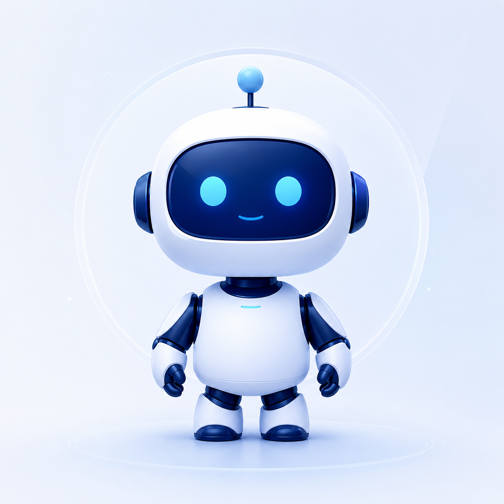

云州市第一人民医院 · 运营决策智能体
运营驾驶舱
运营月报
异常预警
问数
DRG 病组
权限与审计
智能体工具
智能体在线
运营管理部 王琳

DRG 病组盈亏分析 · 2026Q1
按月全量测算 · 费用结构对比 · 改进方向（草稿态，DRG 办确认）
口径表 v1.0 · 数据截至 2026-05-31 · 模拟测试数据
重新测算本月病组
DRG
病组
科室
例数
例均费用
支付标准
例均盈亏
近 6 个月 DRG 亏损病组数与结余
亏损病组（柱）· 结余万元（线）
按科室亏损合计
0
需求不符
待确认
客户要改
建议
取消
保存批注